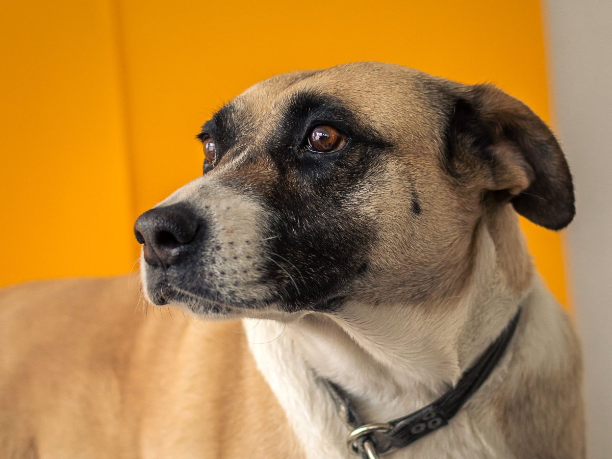
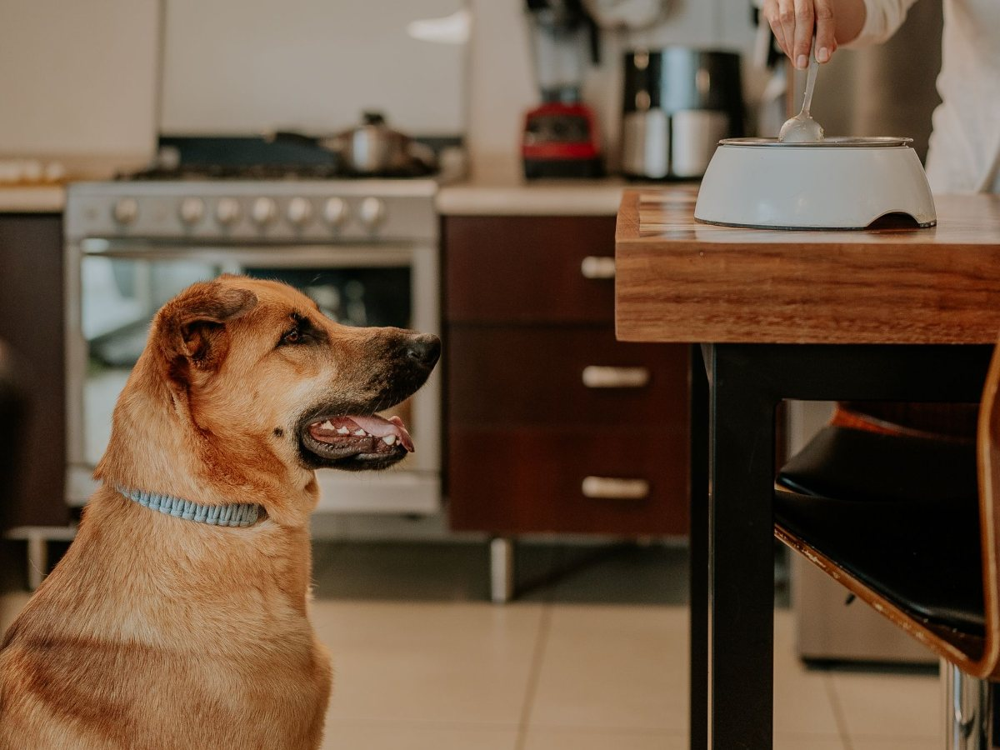
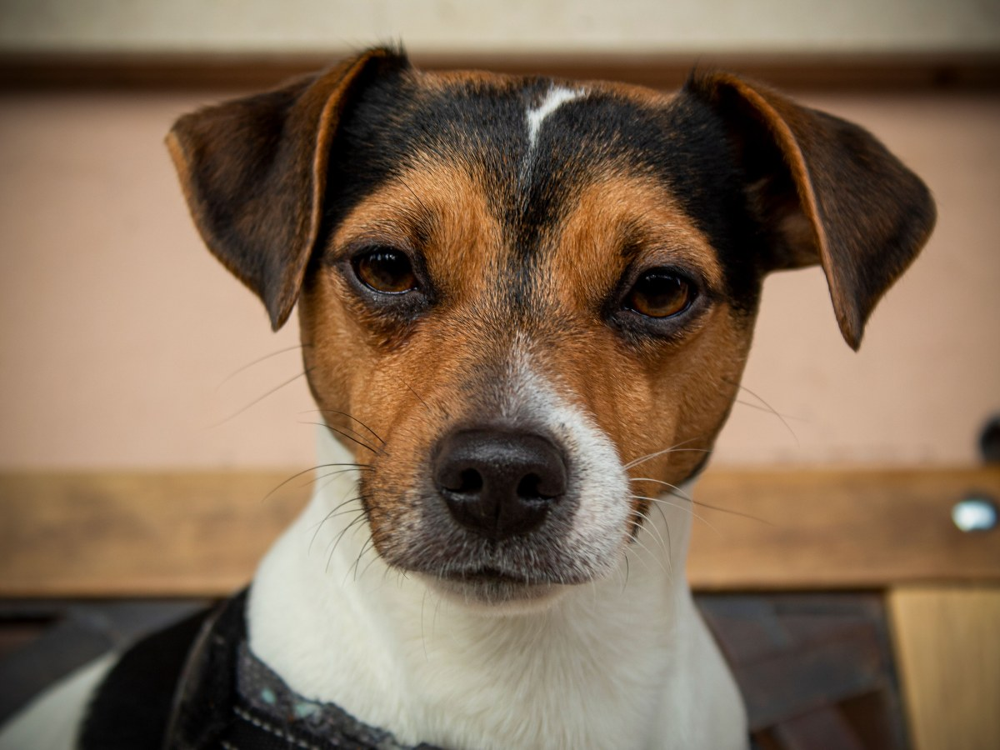
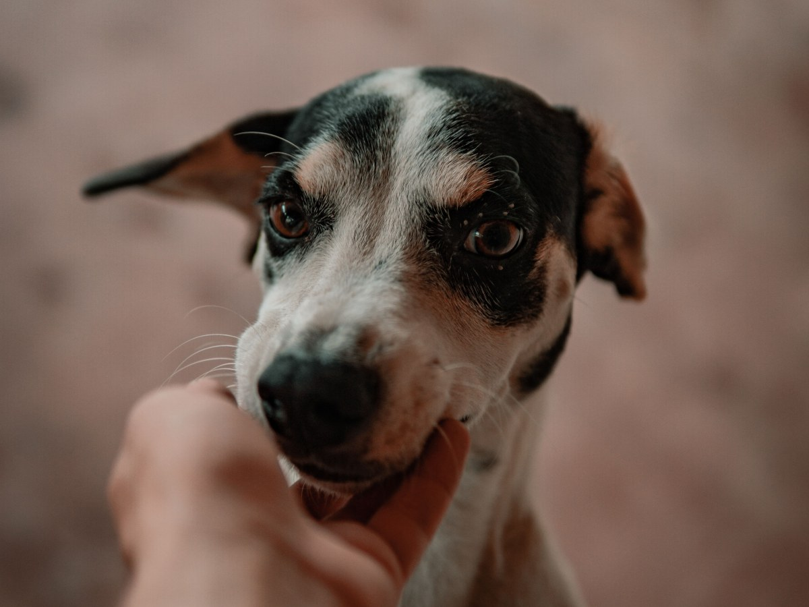
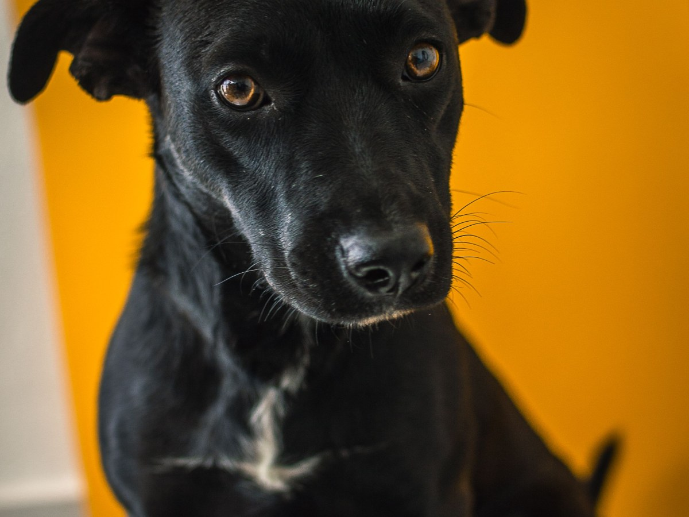
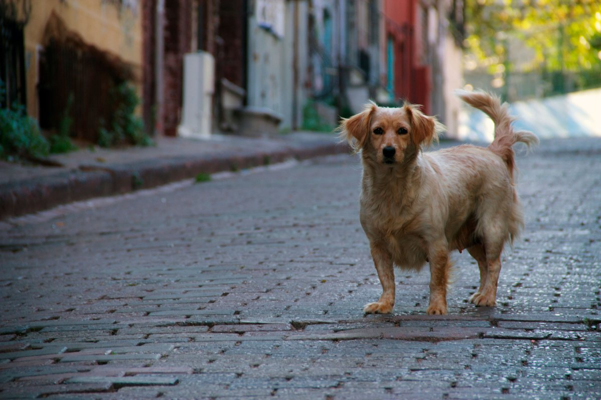
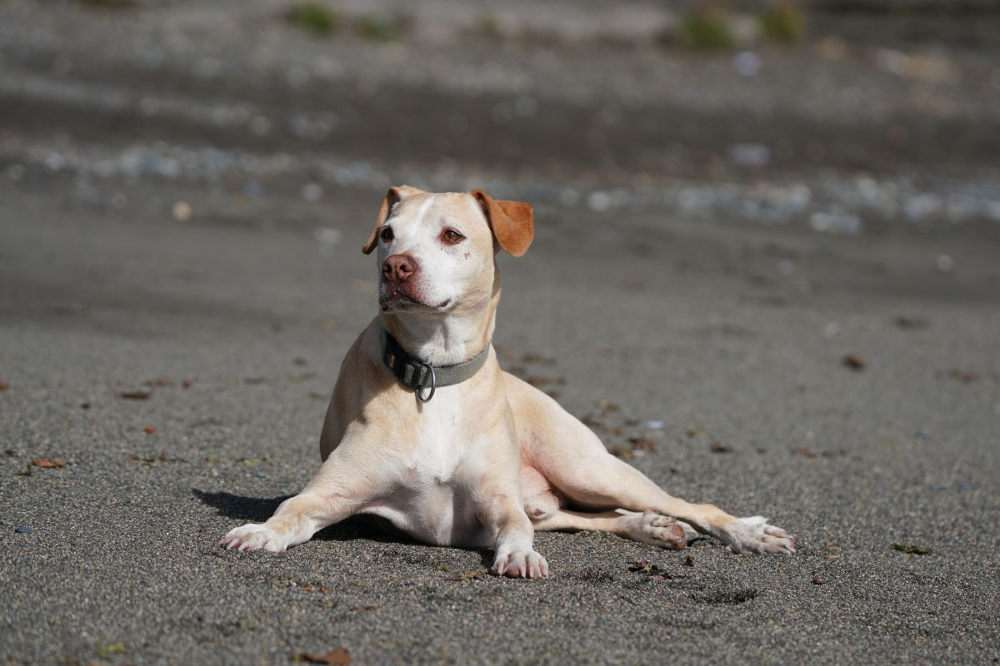

Maipú · Calle Santa Elena
Sin raza, con clínica.
Porloskiltros, con 293 reseñas en Maipú.
- 293reseñas en Google
- 6días a la semana con hora
- 60minutos dura la consulta inicial
- 0páginas propias: el nombre ya es marca
Kiltro sano
Lo que un kiltro necesita y nadie explica
- TALLA
No se puede adivinar
Por eso se controla el peso.
- PARÁSITOS
Por dentro y por fuera
Según le indique el veterinario.
- CHIP Y REGISTRO
Que tenga dueño en papel
Si se pierde, vuelve.
- ESTERILIZACIÓN
Se conversa
Una recomendación general, no un apuro.
- UNA VEZ AL AÑO
El control
Con sus vacunas al día.
Cada kiltro es distinto: lo define la consulta.
Ningún perro es igual a otro, y un kiltro menos.
En su agenda
Lo que se reserva
-

60 min
Consulta inicial
Para conocer a tu perro o gato.
-

20 min
Consulta general
Para lo de siempre.
-

30 min
Consulta y vacuna
Antirrábica, óctuple o leucemia.
-

20 min
Exámenes
Toma de muestras.
-

Identificación
Microchip
Declarado en su agenda.
-

Quirófano
Esterilización
Declarada en su agenda, por confirmar.
Servicios y duraciones de su AgendaPro. El pago, en la clínica.
293 reseñas en Maipú.
Calle Santa Elena, Maipú
Orejas, collar y calle
Los de siempre


Fotos de referencia: ninguna es de la clínica.
Dónde estamos
Calle Santa Elena, Maipú
- Dirección
- Santa Elena 331, según su agenda
- +56 9 5097 2727
- Lun a vie
- 9:00–19:00
- Sábado
- 10:00–19:00
Otra guía da el 540 de la misma calle: el número se confirma por WhatsApp.
Santa Elena, Maipú Abrir en Google Maps
Para el dueño
Qué es real y qué falta
Lo verificado
WhatsApp, horario, servicios y duraciones de su AgendaPro, y las reseñas.
Lo de ejemplo
La ficha del kiltro sano y las fotos.
Lo que falta
El número exacto de la calle, el equipo y fotos de sus kiltros.